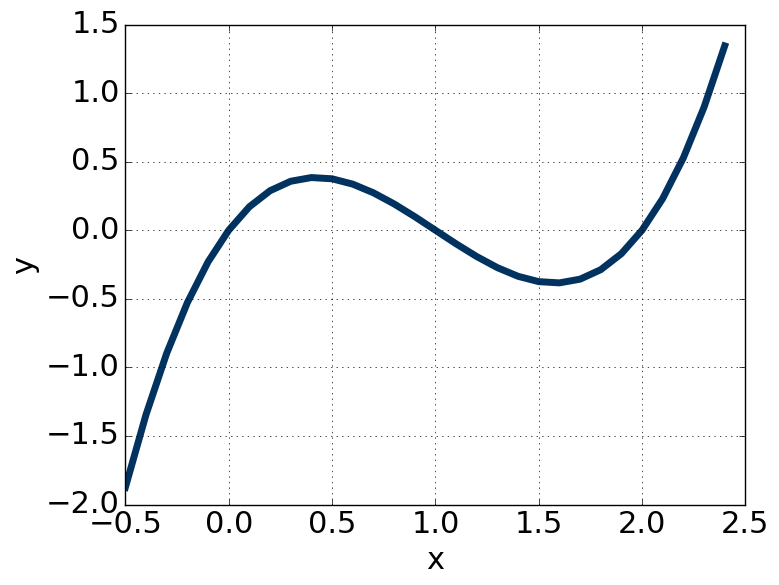
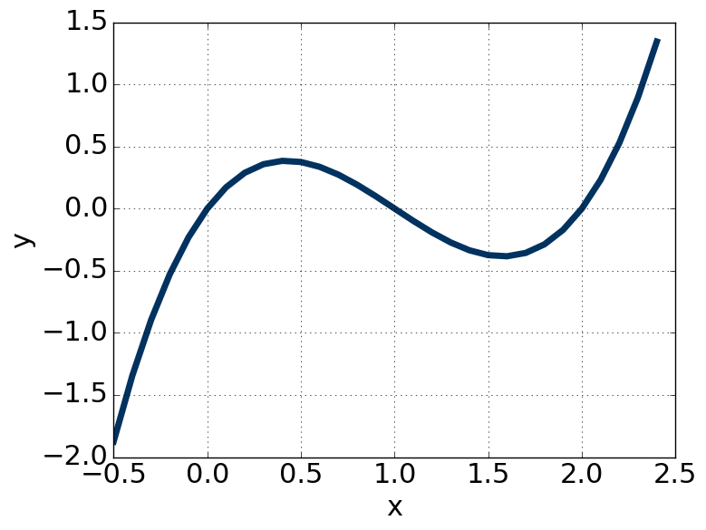
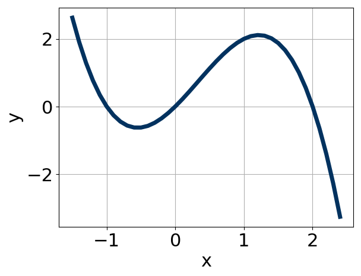

List zeros from smallest to largest. Use and as exponents. The leading coefficient is either or .
Convert between a polynomial function and its graph.
First, watch this video to learn what the different forms of a polynomial can tell you about its shape. Now practice converting between the graph and the corresponding equation.

List zeros from smallest to largest. Use and as exponents. The leading coefficient is either or .

List zeros from smallest to largest. Use and as exponents. The leading coefficient is either or .